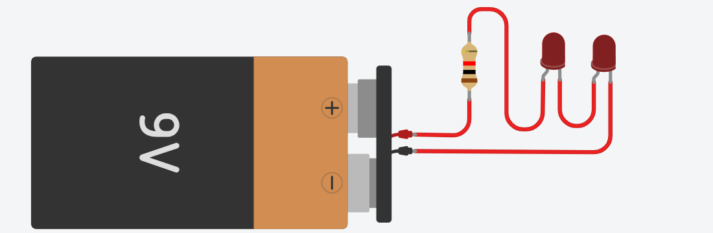

AMontage en série

Résistance ▶LED 1 ▼◀ LED 2+−👆 Touche l'image pour l'agrandir
- 1Le + de la pile → la résistance.
- 2La résistance → la patte longue de la LED 1.
- 3La patte courte de la LED 1 → la patte longue de la LED 2.
- 4La patte courte de la LED 2 → le − de la pile.
- 5Je touche « Démarrer la simulation ».
Une seule résistance, un seul chemin.
BMontage en dérivation
 Résistance 1 ▶Résistance 2 ▶+−
Résistance 1 ▶Résistance 2 ▶+−👆 Touche l'image pour l'agrandir
- 1Le + de la pile → la résistance 1 et la résistance 2.
- 2La résistance 1 → la patte longue de la LED 1.
- 3La résistance 2 → la patte longue de la LED 2.
- 4La patte courte de chaque LED → le − de la pile.
- 5Je touche « Démarrer la simulation ».
Chaque LED a sa résistance et son propre chemin.
✓Je teste et je compare
| Je teste… | En série | En dérivation |
|---|---|---|
| Nombre de chemins | 1 | 2 |
| La lumière des LED | faible | forte |
| Je supprime une LED | l'autre s'éteint | l'autre reste allumée |
Je teste d'abord les 2 montages, puis je regarde les réponses.
★À retenir
!
En série : 1 seul chemin. En dérivation : 1 chemin pour chaque LED.

📖 Lexique français → عربية
| La pile | العمود الكهربائي |
| Le + / le − de la pile | القطب الموجب / القطب السالب |
| La LED | الصمام الثنائي الباعث للضوء |
| La patte longue / courte | الرجل الطويلة / القصيرة |
| La résistance | المقاومة (الموصل الأومي) |
| Le bouton-poussoir | الزر الضاغط |
| Le fil | السلك الموصل |
| Circuit fermé / ouvert | دارة مغلقة / مفتوحة |
| En série | على التوالي |
| En dérivation | على التوازي |
| Le court-circuit | الدارة القصيرة |